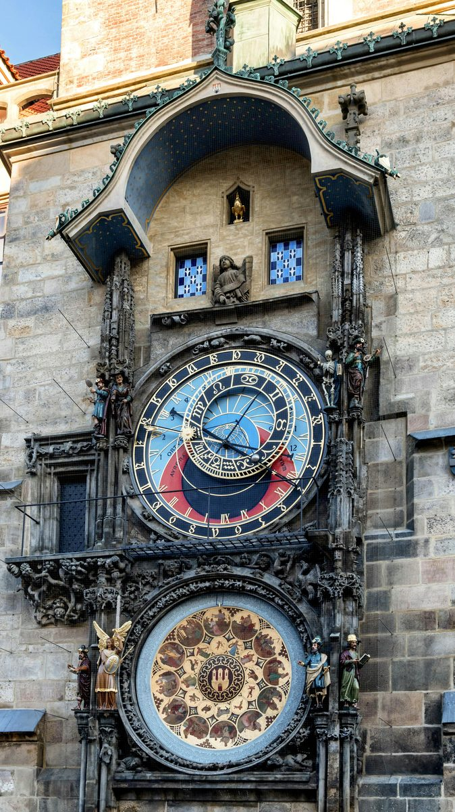
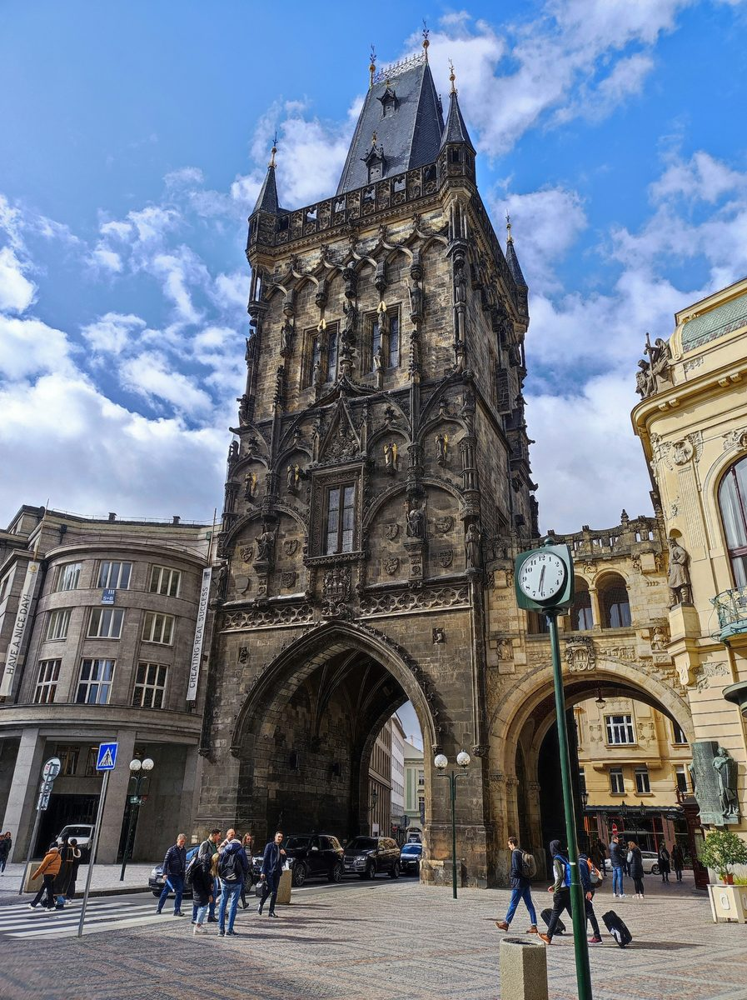

Prague is one of the few European capitals that emerged from the 20th century largely intact. It was not bombed in the Second World War. The communist period preserved it in aspic rather than demolishing it. The result is a medieval city centre that is not a reconstruction but the real thing.
The Old Town hall has been here since 1338, the Charles Bridge since 1357, the Astronomical Clock since 1410. That continuity is what you feel walking through it. Three days gives you enough time to understand the city properly: the old core on one side of the river, the castle on the other, and the quieter neighbourhoods beyond both.
How Prague
is organised.
Prague sits on the Vltava river, with the Old Town (Stare Mesto) and New Town (Nove Mesto) on the east bank, and Mala Strana (the Little Quarter) and Prague Castle on the west bank. Charles Bridge connects them. Most of what first-time visitors want to see lies within walking distance of this axis.
The city is more compact than it looks on a map. From the Astronomical Clock in Old Town Square to Charles Bridge is about a fifteen-minute walk. From the bridge up to Prague Castle is another fifteen minutes on foot, uphill through Mala Strana. The Metro is useful for reaching places further out, but for most of Day 1 and Day 2, your feet are enough.
Old Town, the Jewish Quarter,
and Charles Bridge.
Start at the Astronomical Clock in Old Town Square. The clock dates to 1410 and is the oldest still-working astronomical clock in the world. On the hour, from 9am to 11pm, a procession of the Apostles moves across the upper windows. The mechanism shows solar time, lunar time, the position of the sun and moon in the zodiac, and the time of sunrise and sunset, all simultaneously. It is a medieval computer. The square itself has been the heart of the city since the 10th century: the Town Hall beside the clock has stood here since 1338.
The Stepcast Prague tour begins here and takes you through the entire Day 1 route, with audio commentary at each stop. Walk east from the square to the Powder Tower, one of the original gates of the medieval city, and then north into Josefov: the former Jewish ghetto, now the Jewish Quarter.
The Spanish Synagogue, built in 1868 in Moorish Revival style, is one of the most striking interiors in Prague. The Old-New Synagogue, dating to around 1270, is one of the oldest Gothic buildings in the city and the oldest active synagogue in Europe. The Jewish Quarter was not destroyed during the Second World War because Hitler reportedly planned to preserve it as a museum to an extinct race. Prague's Jewish population was almost entirely murdered at Theresienstadt and Auschwitz. The quarter that survived is a memorial to absence as much as presence.
Continue to Jan Palach Square, named for the 21-year-old student who set himself on fire in January 1969 in protest at the Soviet invasion the previous year. The square faces the Rudolfinum, a neo-Renaissance concert hall that has been home to the Czech Philharmonic since 1946. From here it is a short walk to Charles Bridge.
The bridge was commissioned by Charles IV in 1357 and took 45 years to build. The 30 baroque statues lining both sides were added in the 17th and 18th centuries: they were not part of the original design but have been here long enough that nobody thinks of the bridge without them. Cross toward Mala Strana.
On Cihelna Street just off the western end of the bridge, look for the Piss Sculpture by David Cerny: two mechanical figures urinating into a pool shaped like the Czech Republic, the streams spelling out literary quotations as they move. Cerny is Prague's most prominent contemporary artist and this is one of his more straightforward pieces. The Lennon Wall, covered in Beatles lyrics and peace messages since the 1980s and repainted repeatedly after police whitewashed it during the communist era, is five minutes south on Velkoprevorske namesti. Walk up Nerudova Street from the bridge: this is the Royal Route up to the castle, named for the 19th-century Czech writer Jan Neruda, lined with baroque palaces and the house signs that identified buildings before street numbers existed.
Evening: the neighbourhood below the castle, Mala Strana, has good restaurants and is considerably quieter than the Old Town. Stay here rather than crossing back.
The Stepcast Prague tour
follows Day 1's exact route.
The Astronomical Clock, Old Town Square, the Powder Tower, the Jewish Quarter, Charles Bridge, the Piss Sculpture, the Lennon Wall, Nerudova Street. Audio commentary at every stop. Go at your own pace. First 3 stops completely free.
Try the Prague tour for free →
Prague Castle
and Vysehrad.
Prague Castle is the largest ancient castle complex in the world by area: 70,000 square metres of palaces, churches, gardens, and galleries on a ridge above the river. It is not one building but a walled town within a city, and it takes most of a morning to move through it at a reasonable pace.
The St Vitus Cathedral inside the castle grounds took nearly 600 years to complete: the foundation stone was laid in 1344, construction was interrupted repeatedly, and the cathedral was not formally consecrated until 1929. The stained glass in the third window on the left is by Alphonse Mucha, commissioned and paid for by an insurance company in 1931. The Old Royal Palace contains the Vladislav Hall, a vast Gothic great hall completed in 1502 where jousting tournaments were held indoors: the vaulted ceiling spans a space large enough for horses to enter via a ramp on the south side. The Golden Lane is a row of tiny houses built into the castle walls in the 16th century for castle guards and later for goldsmiths. Franz Kafka briefly rented a workshop at number 22 in 1916 and 1917.
Walk down from the castle through the gardens in summer (the Ledeburg and Palffy gardens on the south slope are among the most beautiful in the city), or back through Mala Strana to the river. Kampa island, directly south of Charles Bridge, is one of the quietest spots in central Prague: a small park between a mill canal and the Vltava, with the river on one side and the bridge above. Sit by the water for half an hour.
Optional afternoon alternative: Vysehrad, the other historic citadel, sits on a cliff above the Vltava two kilometres south of the Old Town. Far fewer tourists. The cemetery contains the graves of Dvorak, Smetana, Mucha, and most of the significant figures in Czech cultural history. The views from the walls over the river bend are excellent. Take the Metro from Malostranska to Vysehrad (Line C, two stops from IP Pavlova).
Evening: try Zizkov or Vinohrady for dinner. Both are residential neighbourhoods east of Wenceslas Square with good local restaurants and bars, and both are a complete contrast to the tourist centre. Zizkov is scruffier and cheaper, with a strong tradition of hospody (pubs) that have been serving the same neighbourhood for a hundred years. Vinohrady is Art Nouveau and more polished, with a higher concentration of wine bars and modern restaurants. Neither is on most tourist itineraries, which is the point.

Kutna Hora:
bones, cathedrals,
and silver.
Train from Praha hlavni nadrazi (Prague main station) to Kutna Hora: about 50 to 60 minutes, with frequent connections throughout the day. This is a straightforward day trip and one of the most unusual excursions available from any European capital.
Sedlec Ossuary
The Ossuary is a small Roman Catholic chapel decorated entirely with human bones. It contains the skeletal remains of between 40,000 and 70,000 people, and the bones have been arranged into chandeliers, coats of arms, garlands, and columns. The current arrangement was made in 1870 by a woodcarver named Frantisek Rint, who signed his name in bones on the wall near the entrance. There is a chandelier containing at least one of every bone in the human body.
This is not a macabre tourist trap. It is a genuinely extraordinary building with a specific history rooted in medieval plague and the Hussite Wars of the 15th century, when thousands of people were buried in ground that had been sanctified by soil brought from Jerusalem in 1278. The Ossuary is a 10-minute walk from Kutna Hora Sedlec station, one stop before the main Kutna Hora station. Get off there first, visit the Ossuary, then continue to the main station.
The Ossuary and St Barbara's Cathedral are in different parts of Kutna Hora and require separate tickets. Check the official website for current prices and opening hours before travelling. The two sites are about a 20-minute walk apart through the old town, or a short taxi ride.
St Barbara's Cathedral
The Gothic cathedral dedicated to the patron saint of miners was begun in 1388 and never quite finished: the construction was halted repeatedly as the silver mines that funded it were exhausted, and the current building is roughly two-thirds of what was originally planned. The flying buttresses, the triple tent roof, the interior frescoes depicting medieval mining life including a man painting coins in the royal mint. One of the most unusual Gothic buildings in central Europe and far less visited than it deserves to be.
The town
Kutna Hora itself was, in the 14th century, the second richest city in Bohemia after Prague: its wealth came entirely from silver mining, and at its peak it was producing roughly one third of all the silver mined in Europe. The Italian Court (Vlassky dvur) in the centre of town was the former royal mint, where the Prague groschen, the standard currency of Bohemia for 200 years, was produced. The town declined after the silver ran out in the 16th century and was partially destroyed in the Thirty Years War, which is why so much of the medieval fabric survived: there was no money to rebuild and nothing to demolish it for.
Return to Prague in the late afternoon. Trains are frequent and the journey back is the same 50 to 60 minutes.
Practical things
worth knowing.

Getting there
Vaclav Havel Airport (PRG) is well connected to the city centre by public transport. Bus 119 runs to Nadrazni Veleslavin Metro station (Line A), then Metro to the centre: about 40 minutes total, around 40 Czech crowns (roughly 1.60 euros). Buy the ticket from the machine before boarding the bus. The Airport Express bus runs directly to Praha hlavni nadrazi (main station) in about 35 to 40 minutes, around 100 Czech crowns (about 4 euros). Taxis from the airport to the centre cost around 500 to 700 Czech crowns (20 to 28 euros): agree the price before getting in, or use a metered cab from the official rank. Bolt and Uber both operate in Prague and are significantly cheaper than hailed taxis.
Getting around
The Metro has three lines: A (green), B (yellow), and C (red). Trams and buses cover the areas the Metro does not reach. A 24-hour or 72-hour tourist pass covers all public transport and is good value if you are moving around the city on multiple days. Tram 22 passes through Mala Strana and up to the castle area: it is the most scenic public transport route in the city and worth taking at least once even if you are walking the same ground.
Currency
The Czech Republic uses Czech crowns (CZK), not euros. Cards are widely accepted in most shops, restaurants, and attractions, but carry some cash for smaller places, markets, and anywhere away from the tourist centre. ATMs are widely available throughout the city.
Beer
Czech pilsner is what the word pilsner means. Pilsner Urquell was first brewed in Plzen in 1842, and everything called a pilsner since is a version of that original recipe. Prague also has Kozel, Budvar (known outside the Czech Republic as Czechvar, for complicated trademark reasons involving an American brewery), and a growing craft beer scene centred on Zizkov and Vinohrady.
A half-litre in a local hospoda costs around 50 to 60 Czech crowns, which is roughly 2 to 2.50 euros. This is what it costs. Do not pay more. If a bar near the Astronomical Clock is charging three times that, walk two streets back and find somewhere with locals at the tables.
Food
Svickova: braised beef sirloin in a cream sauce with bread dumplings, cranberry compote, and a slice of lemon. Sounds peculiar. Is extraordinary. Order it once. Svickova is the dish Prague is proud of, the one that locals will tell you to try before anything else, and they are right.
Goulash with bread dumplings: the Bohemian version is slightly different from the Hungarian original, lighter on paprika and served with bread dumplings rather than rice or pasta. It is the other dish worth eating at least once.
Trdelnik: the spiral pastry sold on every corner in the Old Town is not a traditional Czech food and was not invented in Prague. It originated in Slovakia and became a fixture of the Old Town tourist economy in the 2000s. It is fine, but you are paying tourist prices for something with no particular local significance. The bread dumplings served with svickova are more authentically Bohemian than the trdelnik.
The area around the Astronomical Clock is among the most densely visited square metres in Europe in July and August. The clock itself is worth seeing. The restaurants on Old Town Square are not: the food is mediocre and the prices are set for visitors who will not return. Walk one street back in any direction for immediate improvement.
Your 3-day Prague
itinerary at a glance.
Walk Prague with
a guide in your pocket.
The Stepcast Prague tour covers the Old Town, the Jewish Quarter, Charles Bridge, Mala Strana, and more, with audio commentary at each stop. No booking, no group, no fixed start time. Go at your own pace and stop when you want. First 3 stops completely free.
Try the Prague tour for free →